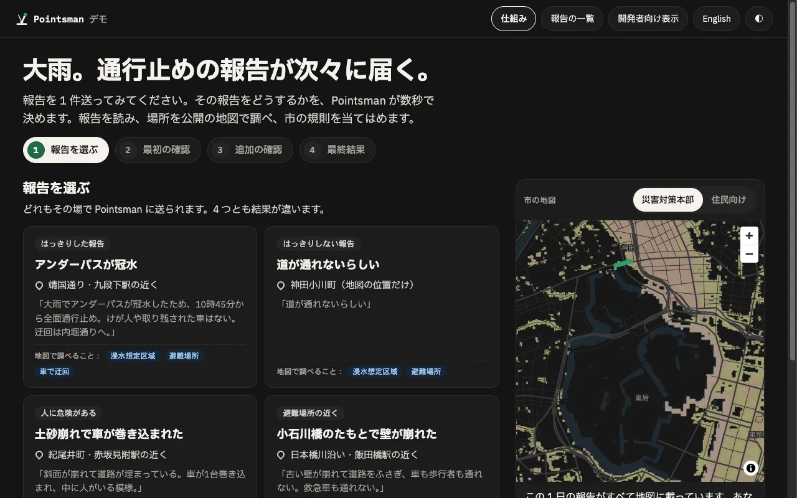
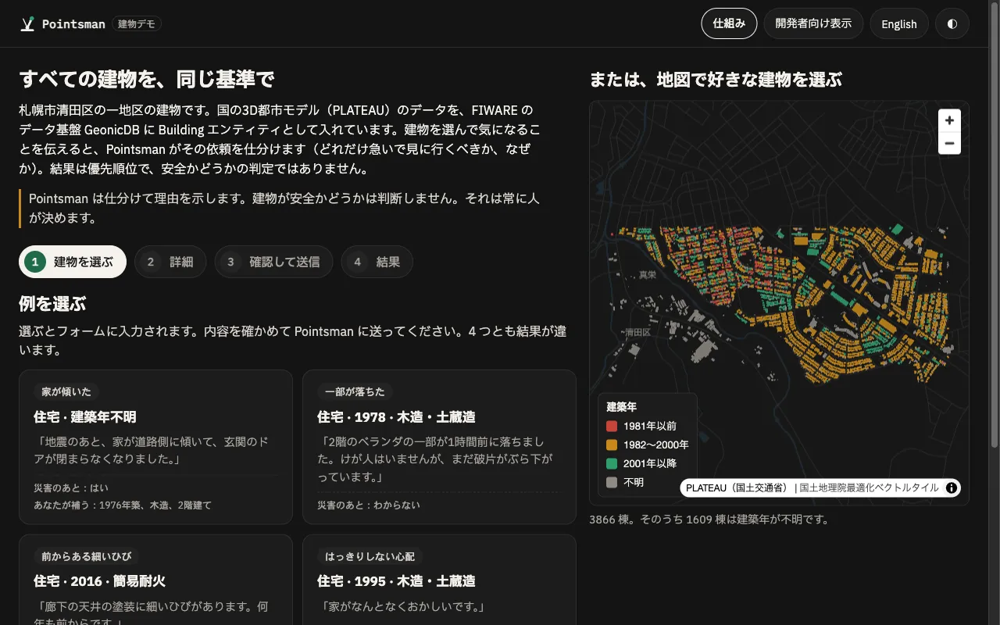

 大雨の通行止め 住民が通行止めを報告します。Pointsman は報告を読み、公開の地図で場所を調べ、数秒で決めます：地図に載せるか、人に確認を頼むか、緊急として扱うか。 FIWARE日本の地図データ人による確認 デモを開く → ソースコード →
 建物の確認 札幌の3D都市モデルにある実在の建物です。気になることを伝えると、Pointsman がどれだけ急いで見に行くべきか、なぜかを示します。安全かどうかは人が決めます。 FIWARE3D都市モデル（PLATEAU）AI が説明を読む デモを開く → ソースコード →